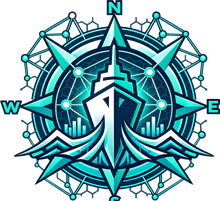

<!doctype html>
<html lang="en">
<head>
<meta charset="utf-8">
<title>Jalavita — Marine Safety Advisory System</title>
<meta name="viewport" content="width=device-width,initial-scale=1">
<meta name="description" content="An offline-first marine safety advisory system for Indian fishermen — Command Deck for operators, Wayfinder PWA and SMS gateway for vessels with zero signal. Built for Smart India Hackathon SIH26176.">
<link rel="icon" href="assets/logo-mark.png">
<link rel="preconnect" href="https://fonts.googleapis.com">
<link rel="preconnect" href="https://fonts.gstatic.com" crossorigin>
<link rel="stylesheet" href="https://fonts.googleapis.com/css2?family=Unbounded:wght@600;700;800&family=IBM+Plex+Sans:wght@400;500;600&family=IBM+Plex+Mono:wght@400;500&display=swap">
<style>
  :root{
    --abyss:#070b12;
    --hull:#0d1420;
    --hull-2:#101a29;
    --hull-3:#1c2c42;
    --signal:#2fe6c6;
    --signal-dim:rgba(47,230,198,.14);
    --alert:#ffb547;
    --alert-dim:rgba(255,181,71,.16);
    --ink:#e7eef0;
    --ink-dim:#8ca0ac;
    --ink-faint:#4d5c67;
    --line:rgba(122,204,214,.16);
    --line-strong:rgba(122,204,214,.32);
  }
  *{box-sizing:border-box;}
  html{background:var(--abyss);scroll-behavior:smooth;}
  body{
    margin:0;color:var(--ink);
    font:400 16px/1.65 'IBM Plex Sans',system-ui,sans-serif;
    background:
      radial-gradient(ellipse 1100px 640px at 12% -10%, rgba(47,230,198,.07), transparent 60%),
      radial-gradient(ellipse 1000px 760px at 100% 8%, rgba(255,181,71,.045), transparent 55%),
      var(--abyss);
  }
  a{color:var(--signal);}
  .wrap{max-width:1080px;margin:0 auto;padding:0 24px;}
  section{padding:88px 0;}
  h1,h2,h3{font-family:'Unbounded';font-weight:800;text-wrap:balance;margin:0;}
  .eyebrow{
    font:600 11px/1 'IBM Plex Mono',monospace;letter-spacing:.16em;text-transform:uppercase;
    color:var(--signal);display:flex;align-items:center;gap:10px;
  }
  .eyebrow::before{content:"";width:22px;height:1px;background:var(--line-strong);}

  /* ---------- nav ---------- */
  nav{
    position:sticky;top:0;z-index:20;backdrop-filter:blur(10px);
    background:rgba(7,11,18,.78);border-bottom:1px solid var(--line);
  }
  nav .wrap{display:flex;align-items:center;justify-content:space-between;padding:14px 24px;}
  .brand{display:flex;align-items:center;gap:10px;}
  .brand img{width:28px;height:28px;object-fit:contain;}
  .brand span{font-family:'Unbounded';font-weight:800;font-size:16px;letter-spacing:.02em;}
  .brand span b{color:var(--signal);font-weight:800;}
  .navlinks{display:flex;gap:26px;font-size:13px;color:var(--ink-dim);}
  .navlinks a{color:var(--ink-dim);text-decoration:none;}
  .navlinks a:hover{color:var(--ink);}
  @media (max-width:680px){.navlinks{display:none;}}

  /* ---------- hero ---------- */
  .hero{padding:80px 0 60px;text-align:center;}
  .hero h1{font-size:clamp(38px,6.2vw,66px);margin-top:18px;}
  .hero h1 span{color:var(--signal);}
  .hero p{max-width:600px;margin:20px auto 0;color:var(--ink-dim);font-size:16.5px;}
  .cta-row{display:flex;gap:14px;justify-content:center;flex-wrap:wrap;margin-top:32px;}
  .btn{
    display:inline-flex;align-items:center;gap:8px;padding:13px 22px;border-radius:11px;
    font:600 13.5px/1 'IBM Plex Sans';text-decoration:none;border:1px solid transparent;
    transition:filter .15s,transform .15s;
  }
  .btn:hover{filter:brightness(1.1);transform:translateY(-1px);}
  .btn-primary{background:var(--signal);color:#062018;}
  .btn-ghost{background:var(--hull);border-color:var(--line-strong);color:var(--ink);}
  .live-dot{width:7px;height:7px;border-radius:50%;background:var(--signal);box-shadow:0 0 8px 2px var(--signal-dim);animation:pulse 1.8s ease-in-out infinite;flex:none;}
  @keyframes pulse{0%,100%{opacity:1;}50%{opacity:.35;}}
  .demo-note{margin-top:14px;font-size:11.5px;color:var(--ink-faint);}

  /* ---------- stat strip ---------- */
  .stats{display:grid;grid-template-columns:repeat(auto-fit,minmax(220px,1fr));gap:1px;background:var(--line);border:1px solid var(--line);border-radius:16px;overflow:hidden;}
  .stat{background:var(--hull);padding:26px 24px;}
  .stat .v{font:700 26px/1.1 'Unbounded';color:var(--signal);font-variant-numeric:tabular-nums;}
  .stat .k{margin-top:8px;font-size:13px;color:var(--ink-dim);line-height:1.55;}

  /* ---------- channels ---------- */
  .channels{display:grid;grid-template-columns:repeat(auto-fit,minmax(240px,1fr));gap:16px;margin-top:36px;}
  .channel{
    background:var(--hull);border:1px solid var(--line);border-radius:16px;padding:26px;
    display:flex;flex-direction:column;gap:10px;position:relative;
  }
  .channel.roadmap{border-style:dashed;border-color:var(--line-strong);opacity:.9;}
  .channel .icon{
    width:44px;height:44px;border-radius:12px;display:flex;align-items:center;justify-content:center;
    background:var(--signal-dim);color:var(--signal);font-size:20px;
  }
  .channel.roadmap .icon{background:var(--alert-dim);color:var(--alert);}
  .channel h3{font-family:'IBM Plex Sans';font-weight:600;font-size:16.5px;}
  .channel p{margin:0;font-size:13.5px;color:var(--ink-dim);line-height:1.6;}
  .tag-roadmap{
    position:absolute;top:20px;right:20px;font:600 9.5px/1 'IBM Plex Mono',monospace;
    letter-spacing:.08em;text-transform:uppercase;color:var(--alert);
    background:var(--alert-dim);border:1px solid rgba(255,181,71,.35);border-radius:999px;padding:4px 9px;
  }

  /* ---------- feature tabs ---------- */
  .tabs-head{display:flex;gap:8px;flex-wrap:wrap;border-bottom:1px solid var(--line);padding-bottom:14px;margin-top:34px;}
  .tab-btn{
    background:transparent;border:1px solid var(--line);color:var(--ink-dim);
    font:500 12.5px/1 'IBM Plex Sans';padding:9px 16px;border-radius:999px;cursor:pointer;
  }
  .tab-btn:hover{color:var(--ink);border-color:var(--line-strong);}
  .tab-btn.active{background:var(--signal);color:#062018;border-color:var(--signal);}
  .tab-panel{display:none;padding-top:28px;grid-template-columns:1.1fr .9fr;gap:36px;}
  .tab-panel.active{display:grid;}
  .tab-panel h4{font-family:'Unbounded';font-weight:700;font-size:19px;margin:0 0 12px;}
  .tab-panel p{color:var(--ink-dim);font-size:14px;line-height:1.7;margin:0 0 14px;}
  .tab-panel ul{margin:0;padding-left:18px;color:var(--ink-dim);font-size:13.5px;line-height:1.8;}
  .tab-panel code{background:var(--hull-2);padding:1px 6px;border-radius:5px;font-family:'IBM Plex Mono';font-size:12px;color:var(--signal);}
  .ladder{border:1px solid var(--line);border-radius:14px;overflow:hidden;background:var(--hull);}
  .ladder-row{display:grid;grid-template-columns:100px 1fr;gap:0;border-top:1px solid var(--line);}
  .ladder-row:first-child{border-top:none;}
  .ladder-row .st{padding:12px 14px;font:600 11px/1.3 'IBM Plex Mono';color:var(--signal);background:var(--hull-2);display:flex;align-items:center;}
  .ladder-row .desc{padding:12px 14px;font-size:12.5px;color:var(--ink-dim);display:flex;align-items:center;}
  @media (max-width:760px){.tab-panel{grid-template-columns:1fr;}}

  /* ---------- architecture ---------- */
  .mermaid{background:var(--hull);border:1px solid var(--line);border-radius:16px;padding:24px;overflow-x:auto;margin-top:28px;}

  /* ---------- contract callout ---------- */
  .contract{
    display:grid;grid-template-columns:1fr 1fr;gap:36px;align-items:center;margin-top:28px;
  }
  .contract pre{
    background:var(--hull);border:1px solid var(--line);border-radius:14px;padding:20px;
    font:12.5px/1.7 'IBM Plex Mono',monospace;color:var(--signal);overflow-x:auto;margin:0;
  }
  .contract p{color:var(--ink-dim);font-size:14px;line-height:1.75;}
  @media (max-width:760px){.contract{grid-template-columns:1fr;}}

  /* ---------- stack ---------- */
  .stack-row{display:flex;flex-wrap:wrap;gap:10px;margin-top:24px;}
  .chip{
    font:500 12px/1 'IBM Plex Mono',monospace;letter-spacing:.02em;
    background:var(--hull);border:1px solid var(--line);border-radius:999px;padding:8px 14px;color:var(--ink-dim);
  }

  /* ---------- footer ---------- */
  footer{border-top:1px solid var(--line);padding:48px 0;text-align:center;}
  footer .brand{justify-content:center;margin-bottom:14px;}
  footer p{color:var(--ink-faint);font-size:12.5px;margin:6px 0;}
  footer .links{display:flex;gap:22px;justify-content:center;margin-top:14px;font-size:13px;flex-wrap:wrap;}
  footer .links a{color:var(--ink-dim);text-decoration:none;}
  footer .links a:hover{color:var(--signal);}
</head>
<body>

<nav>
  <div class="wrap">
    <div class="brand"><span>JALA<b>VITA</b></span></div>
    <div class="navlinks">
      <a href="#channels">Channels</a>
      <a href="#features">Features</a>
      <a href="#architecture">Architecture</a>
      <a href="#stack">Stack</a>
      <a href="https://github.com/siddhu2606/jalavita">GitHub ↗</a>
    </div>
  </div>
</nav>

<header class="hero wrap">
  <div class="eyebrow" style="justify-content:center">Smart India Hackathon · SIH26176 · Team V/Slash</div>
  <h1>Marine safety that doesn't<br>need a signal to work<span>.</span></h1>
  <p>A Command Deck for coastal operators and an offline-first companion for every boat — reaching fishermen through an installable app, plain SMS, and, on the roadmap, a voice-speaking radio beacon for boats with no phone at all.</p>
  <div class="cta-row">
    <a class="btn btn-primary" href="https://books-camcorders-earned-speakers.trycloudflare.com" target="_blank" rel="noopener"><span class="live-dot"></span> Try the live demo</a>
    <a class="btn btn-ghost" href="https://books-camcorders-earned-speakers.trycloudflare.com/install" target="_blank" rel="noopener">📲 Install Wayfinder on your phone</a>
    <a class="btn btn-ghost" href="https://github.com/siddhu2606/jalavita">View source ↗</a>
  </div>
  <div class="demo-note">Live demo link is hosted on an ephemeral tunnel during judging hours — if it's gone quiet, the repo runs identically in two minutes locally (see README).</div>
</header>

<section class="wrap">
  <div class="stats">
    <div class="stat"><div class="v">10–20 km</div><div class="k">offshore is roughly where cellular coverage ends — exactly where the advisory matters most.</div></div>
    <div class="stat"><div class="v">3 channels</div><div class="k">app, SMS, and a roadmap radio beacon — the same alert, delivered however a boat can actually receive it.</div></div>
    <div class="stat"><div class="v">5-state</div><div class="k">offline degradation ladder — absence of data always renders as a warning, never as "all clear."</div></div>
  </div>
</section>

<section class="wrap" id="channels">
  <div class="eyebrow">Reach every boat</div>
  <h2 style="font-size:clamp(24px,3.4vw,34px);margin-top:14px;">One alert, three ways in</h2>
  <div class="channels">
    <div class="channel">
      <div class="icon">▤</div>
      <h3>Wayfinder PWA</h3>
      <p>An installable offline-first app. Caches a briefing packet and the full app shell at harbour, then runs a deterministic on-device rules engine with zero network — no LLM, no guessing.</p>
    </div>
    <div class="channel">
      <div class="icon">✉</div>
      <h3>SMS Gateway</h3>
      <p>For boats with a bare phone and no data plan. Fleet alerts go out as real SMS via Twilio; a fisherman can text back a tip from zero signal and it lands in the same review queue as an app tip.</p>
    </div>
    <div class="channel roadmap">
      <span class="tag-roadmap">Phase 2 concept</span>
      <div class="icon">📡</div>
      <h3>Sagar Sentinel</h3>
      <p>A solar-powered vessel beacon — no phone required. Long-range radio in from a coastal relay, alerts spoken aloud in Marathi, Hindi, or English.</p>
    </div>
  </div>
</section>

<section class="wrap" id="features">
  <div class="eyebrow">What's actually built</div>
  <h2 style="font-size:clamp(24px,3.4vw,34px);margin-top:14px;">Six working systems, not a mockup</h2>

  <div class="tabs-head" role="tablist">
    <button class="tab-btn active" data-tab="offline">Offline Wayfinder</button>
    <button class="tab-btn" data-tab="command">Command Deck</button>
    <button class="tab-btn" data-tab="tips">Fisherman Tips</button>
    <button class="tab-btn" data-tab="trip">Twin Trip Planner</button>
    <button class="tab-btn" data-tab="kyc">Captain KYC</button>
    <button class="tab-btn" data-tab="sms">SMS Gateway</button>
  </div>

  <div class="tab-panel active" data-panel="offline">
    <div>
      <h4>Never says "safe" on a guess</h4>
      <p>The Wayfinder downloads a packet at harbour, caches it in IndexedDB, and a Service Worker caches the shell. Offline, a local rules engine (<code>evaluateOffline()</code> in <code>app.js</code>) re-evaluates the cached packet against a five-state ladder — no network call, no LLM.</p>
      <ul>
        <li>Catch logging queues in IndexedDB and flushes when signal returns</li>
        <li>Distance-to-coast computed on-device via haversine, against real port coordinates</li>
        <li>Full Marathi / Hindi / English UI, precached — language switch works offline</li>
      </ul>
    </div>
    <div class="ladder">
      <div class="ladder-row"><div class="st">LIVE</div><div class="desc">online, packet fresh — normal advisory</div></div>
      <div class="ladder-row"><div class="st">DEGRADED</div><div class="desc">a reading is &gt;3h old — hedge kept, flagged provisional</div></div>
      <div class="ladder-row"><div class="st">CACHED</div><div class="desc">offline, packet still valid — "working from your HH:MM packet"</div></div>
      <div class="ladder-row"><div class="st">EXPIRED</div><div class="desc">offline, past valid_until — "I can't verify current conditions"</div></div>
      <div class="ladder-row"><div class="st">NO DATA</div><div class="desc">nothing ever cached — "contact your harbour officer"</div></div>
    </div>
  </div>

  <div class="tab-panel" data-panel="command">
    <div>
      <h4>Two ways to alert the fleet — deliberately different</h4>
      <p><b style="color:var(--ink)">Emergency Protocol</b> sends a CRITICAL alert to every vessel in one click, takes over the deck with a centered blinking-red modal, and fires real SMS to any vessel with a phone on file.</p>
      <p><b style="color:var(--ink)">Ocean Scenario Simulator</b> lets an operator arm a hazard — High Tide, Rough Seas, Cyclone, Tsunami — which stays visible only on the Command Deck (yellow for warning, red for critical) until they explicitly click <em>Ensure Safety Protocols</em> to broadcast it.</p>
      <ul>
        <li>SHA-256 session login gates the dashboard; the API, Wayfinder, and simulator stay open</li>
        <li>Export to CSV requires a second security code, separate from login</li>
        <li>Live audit ledger + toast notifications for every new tip, alert, and ack</li>
      </ul>
    </div>
    <div>
      <h4>Crisis mode ≠ fleet-wide</h4>
      <p>Crisis mode targets exactly one vessel — the one it's built around — with its own maritime-boundary geofence demo and audio-transcript UI, distinct from a fleet broadcast. The two were kept deliberately separate after early builds conflated them.</p>
    </div>
  </div>

  <div class="tab-panel" data-panel="tips">
    <div>
      <h4>A tip is not an alert</h4>
      <p>A fisherman flags something unusual — rising tide, storm signs, tsunami signs — from the app or by SMS. It lands as an <b style="color:var(--ink)">unverified</b> tip on the Command Deck, never as a confirmed warning.</p>
      <ul>
        <li><b style="color:var(--ink)">Verify</b> — escalates it, arming the scenario simulator for operator review</li>
        <li><b style="color:var(--ink)">Ensure Safety Protocol</b> — broadcasts it to the fleet</li>
        <li><b style="color:var(--ink)">Clear</b> — dismisses it as a false alarm</li>
      </ul>
      <p>An SMS-originated tip runs through this exact same three-button pipeline — the deck can't tell, and doesn't need to, which channel a tip arrived on.</p>
    </div>
  </div>

  <div class="tab-panel" data-panel="trip">
    <div>
      <h4>One plan, two panels, live sync</h4>
      <p>Departure time, duration, and speed can be adjusted from either the Command Deck or the Wayfinder — a change on one pushes to the other over SSE with a polling fallback, and a 3-second anti-flicker window stops a live slider drag from fighting a same-moment refresh.</p>
      <ul>
        <li>Fuel estimate, point-of-no-return, and wave-margin recompute from the real shared state</li>
        <li>Vessel-scoped — each boat has its own plan, not a single global one</li>
      </ul>
    </div>
  </div>

  <div class="tab-panel" data-panel="kyc">
    <div>
      <h4>A verification workflow, honestly scoped</h4>
      <p>Each vessel carries a captain record — name, ID type, a masked ID number, and a proof-of-ID upload — with Verify / Reject actions, visible only while signed in.</p>
      <p style="color:var(--alert)">This demonstrates the review workflow, not a real identity-verification integration. No real ID numbers should ever be entered here.</p>
    </div>
  </div>

  <div class="tab-panel" data-panel="sms">
    <div>
      <h4>Real Twilio underneath, honest when it isn't configured</h4>
      <p>Every fleet alert also attempts an SMS to each vessel's registered number. Without live Twilio credentials, sends are logged as <code>SIMULATED</code> — never silently dropped, never faked as delivered.</p>
      <ul>
        <li>Inbound SMS is parsed, matched to a vessel by phone number, and classified by keyword into the same tip pipeline above</li>
        <li>A <code>/simulator</code> panel exercises the identical inbound webhook code path a real carrier would hit — fully demoable with zero Twilio account</li>
      </ul>
    </div>
  </div>
</section>

<section class="wrap" id="architecture">
  <div class="eyebrow">Under the hood</div>
  <h2 style="font-size:clamp(24px,3.4vw,34px);margin-top:14px;">One FastAPI service, three front doors</h2>
  <p style="color:var(--ink-dim);font-size:14.5px;max-width:640px;margin-top:12px;">No microservices, no message queue — a single backend keeps the Command Deck, the Wayfinder, and the SMS gateway all reading from the same evidence-object state, which is what lets a tip or alert cross channels without special-casing.</p>
  <div class="mermaid">
graph LR
  subgraph shore["Ashore"]
    DECK["Command Deck<br/>operator dashboard"]
    API[("FastAPI + SQLite<br/>evidence-object contract")]
    DECK <--> API
  end
  subgraph sea["At sea"]
    APP["Wayfinder PWA<br/>offline rules engine"]
    PHONE["Any phone<br/>plain SMS, no data"]
    BEACON["Sagar Sentinel<br/>Phase 2 concept"]
  end
  API -- "packet · SSE + poll" --> APP
  API -- "Twilio" --> PHONE
  API -.->|"Phase 2"| BEACON
  </div>
</section>

<section class="wrap">
  <div class="eyebrow">The data contract</div>
  <h2 style="font-size:clamp(24px,3.4vw,34px);margin-top:14px;">Every reading is an Evidence object</h2>
  <div class="contract">
    <pre>{
  "value": 1.4,
  "unit": "m",
  "source": "INCOIS",
  "valid_time": "2026-09-07T04:10:00Z",
  "confidence": "HIGH",
  "sigma": 0.2
}</pre>
    <p>Never a bare number. <code>Evidence</code> is a Pydantic model that rejects an object missing <code>source</code> or <code>valid_time</code>, and rejects a fabricated value paired with <code>confidence: UNKNOWN</code>. If a reading is unavailable, the API returns <code>value: null</code> — it never guesses, and the Wayfinder's offline ladder inherits that same discipline.</p>
  </div>
</section>

<section class="wrap" id="stack">
  <div class="eyebrow">Tech stack</div>
  <h2 style="font-size:clamp(24px,3.4vw,34px);margin-top:14px;">Deliberately boring where it should be</h2>
  <div class="stack-row">
    <span class="chip">Python 3.12</span>
    <span class="chip">FastAPI</span>
    <span class="chip">SQLite</span>
    <span class="chip">Pydantic v2</span>
    <span class="chip">Shapely</span>
    <span class="chip">Server-Sent Events</span>
    <span class="chip">Service Worker + IndexedDB</span>
    <span class="chip">Web Speech API</span>
    <span class="chip">Twilio</span>
    <span class="chip">Trusted Web Activity (Android)</span>
    <span class="chip">Vanilla JS — no frontend framework</span>
  </div>
</section>

<footer>
  <div class="wrap">
    <div class="brand"><span>JALA<b>VITA</b></span></div>
    <p>Built for Smart India Hackathon SIH26176 — "ORCA: Marine Ecosystem Reasoning with Collaborative Agents" — Team V/Slash, VIT Pune.</p>
    <div class="links">
      <a href="https://github.com/siddhu2606/jalavita">GitHub</a>
      <a href="https://books-camcorders-earned-speakers.trycloudflare.com">Live demo</a>
      <a href="https://books-camcorders-earned-speakers.trycloudflare.com/install">Install on phone</a>
      <a href="https://claude.ai/code/artifact/992bef5f-998d-4e10-b01f-2c1b1596b267">Sagar Sentinel concept</a>
    </div>
  </div>
</footer>

<script src="https://cdn.jsdelivr.net/npm/mermaid@10.9.1/dist/mermaid.min.js"></script>
<script>
  mermaid.initialize({
    startOnLoad:true,
    theme:'base',
    themeVariables:{
      background:'#0d1420', primaryColor:'#141f30', primaryTextColor:'#e7eef0',
      primaryBorderColor:'rgba(122,204,214,.32)', lineColor:'#2fe6c6',
      secondaryColor:'#101a29', tertiaryColor:'#101a29', fontFamily:'IBM Plex Sans'
    }
  });

  document.querySelectorAll('.tab-btn').forEach(function(btn){
    btn.addEventListener('click', function(){
      document.querySelectorAll('.tab-btn').forEach(function(b){b.classList.remove('active');});
      document.querySelectorAll('.tab-panel').forEach(function(p){p.classList.remove('active');});
      btn.classList.add('active');
      document.querySelector('.tab-panel[data-panel="'+btn.dataset.tab+'"]').classList.add('active');
    });
  });
</script>
</body>
</html>
